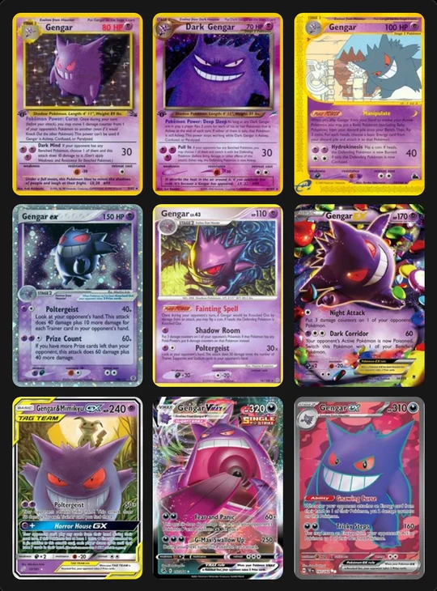

Pokémon binder page
The Gengar binder page

The page, pocket by pocket
Read it left to right, top to bottom: the top row is the early holo years, the middle row the years between, and the bottom row the big modern cards. The three ex cards, in pockets four, six and nine, came out ten years apart.
| Card | Set | Year | |
|---|---|---|---|
| 1 | Gengar | Fossil | 1999 |
| 2 | Dark Gengar | Neo Destiny | 2002 |
| 3 | Gengar | Skyridge | 2003 |
| 4 | Gengar ex | FireRed & LeafGreen | 2004 |
| 5 | Gengar | Stormfront | 2008 |
| 6 | Gengar EX | Phantom Forces | 2014 |
| 7 | Gengar & Mimikyu GX | Team Up | 2019 |
| 8 | Gengar VMAX | Fusion Strike | 2021 |
| 9 | Gengar ex | Temporal Forces | 2024 |
Two pockets that break the pattern
Most of the page is one grinning purple Gengar after another, which is what makes two pockets stand out. Pocket two is Dark Gengar, from Neo Destiny, a set of Dark and Light Pokémon. Pocket seven is a Tag Team card, so Gengar shares it with Mimikyu. If you want every pocket to be Gengar alone, swap pocket seven for another Gengar from the same years; if you like the pair, keep it as the page's one surprise.
Three layouts, compared
1. Oldest to newest. The page pictured above. One Gengar per era, read like a timeline.
2. The evolution line. Three Gastly on the top row, three Haunter in the middle and three Gengar at the bottom. Each row is one Pokémon, and the page reads down the way they evolve. The Fossil set has all three, so the first column can be the 1999 line.
The evolution line: Gengar holds the bottom row.
3. Gengar to Mega Gengar. One row of plain Gengar, one of Gengar ex and one of Mega Gengar. The builder lists M Gengar EX from Phantom Forces and Mega Gengar ex from Phantasmal Flames and Ascended Heroes, so the Mega row fills without repeats.
| Layout | Pages | Best for |
|---|---|---|
| Oldest to newest | 1 | Gengar's whole history at a glance |
| Evolution line | 1 | Gastly, Haunter and Gengar together |
| Gengar to Mega | 1 | Gengar, Gengar ex and Mega Gengar side by side |
Try it before you sleeve
Moving nine cards around a real page is slow, and every move risks a scuff. Try the order on screen first, as many times as you like.
- Open the free page builder. No account needed.
- Type Gengar. The builder lists Gengar cards with the set each one comes from. Add a set name, such as Gengar Fossil, to see only that set's cards.
- Tap one card for each pocket, oldest first. Pockets fill in the order you tap.
- Tap See page. Tap a card to take it out, then add another, until the page looks right.
- Keep the page with a free account, then sleeve the real cards in the same order.
Questions
How many Gengar cards are there?
Dozens, once promos, jumbo cards and every version count. That is far too many for one page, so a Gengar page is a choice of nine: one per era, one per form or your nine favourite drawings.
Which Gengar starts the page?
The Gengar from the Fossil set, 1999. The Base Set had Gastly and Haunter but no Gengar, so Fossil is where Gengar first appears in English.
Why are three of the nine ex cards?
Gengar ex from FireRed & LeafGreen (2004), Gengar EX from Phantom Forces (2014) and Gengar ex from Temporal Forces (2024) come ten years apart, so they land one per row and mark the decades.
Can I swap in a different Gengar?
Yes. Type Gengar and a set name in the builder, such as Gengar Fossil, and tap the card you want. Tap a card on the page to take it out.
Is the page builder free?
Yes. Planning a page needs no account. Keeping it makes a free account, which never asks for payment details.
More guides: Binder theme ideas · Charizard page · Pikachu page · Starter Pokémon page · Favorite Pokémon binder · Binder page planner · Umbreon page · Mew page · Lucario page
Pokémon is a trademark of its owners. Beltstra is an independent app and is not affiliated with or endorsed by them.